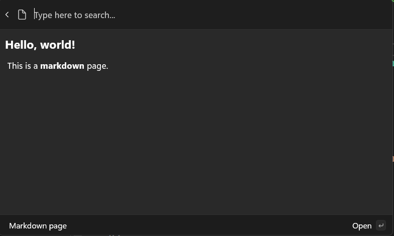
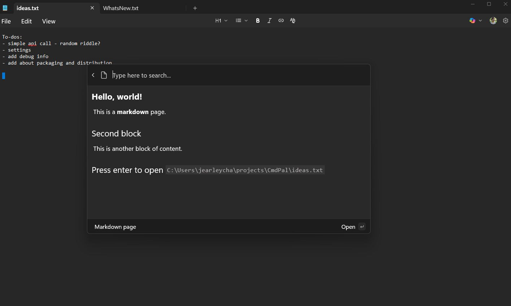

Display markdown content
Previous: Command Results
So far, we've only shown how to display a list of commands in a ListPage. However, you can also display rich content in your extension, such as markdown. This can be useful for showing documentation, or a preview of a document.
Working with markdown content
IContentPage (and its toolkit implementation, ContentPage) is the base for displaying all types of rich content in the Command Palette. To display markdown content, you can use the MarkdownContent class.
- In the
Pagesdirectory, add a new class - Name the class
MarkdownPage.cs - Update the file to:
using Microsoft.CommandPalette.Extensions;
using Microsoft.CommandPalette.Extensions.Toolkit;
using System.Text.Json.Nodes;
internal sealed partial class MarkdownPage : ContentPage
{
public MarkdownPage()
{
Icon = new("\uE8A5"); // Document icon
Title = "Markdown page";
Name = "Preview file";
}
public override IContent[] GetContent()
{
return [
new MarkdownContent("# Hello, world!\n This is a **markdown** page."),
];
}
}
- Open
<ExtensionName>CommandsProvider.cs - Replace the
CommandItems for theMarkdownPage:
public <ExtensionName>CommandsProvider()
{
DisplayName = "My sample extension";
Icon = IconHelpers.FromRelativePath("Assets\\StoreLogo.png");
_commands = [
+ new CommandItem(new MarkdownPage()) { Title = DisplayName },
];
}
- Deploy your extension
- In Command Palette,
Reload
In this example, a new ContentPage that displays a simple markdown string is created. The 'MarkdownContent' class takes a string of markdown content and renders it in the Command Palette.

You can also add multiple blocks of content to a page. For example, you can add two blocks of markdown content.
- Update
GetContent:
public override IContent[] GetContent()
{
return [
new MarkdownContent("# Hello, world!\n This is a **markdown** page."),
+ new MarkdownContent("## Second block\n This is another block of content."),
];
}
- Deploy your extension
- In command palette,
Reload
This allows you to mix-and-match different types of content on a single page.
Adding CommandContextItem
You can also add commands to a ContentPage. This allows you to add additional commands to be invoked by the user, while in the context of the content. For example, if you had a page that displayed a document, you could add a command to open the document in File Explorer:
- In your <ExtensionName>Page.cs, add
doc_path,CommandsandMarkdownContent:
public class <ExtensionName>Page : ContentPage
{
+ private string doc_path = "C:\\Path\\to\\file.txt";
public <ExtensionName>Page()
{
Icon = new("\uE8A5"); // Document icon
Title = "Markdown page";
Name = "Preview file";
path =
+ Commands = [
+ new CommandContextItem(new OpenUrlCommand(doc_path)) { Title = "Open in File Explorer" },
+ ];
}
public override IContent[] GetContent()
{
return [
new MarkdownContent("# Hello, world!\n This is a **markdown** document."),
new MarkdownContent("## Second block\n This is another block of content."),
+ new MarkdownContent($"## Press enter to open `{doc_path}`"),
];
}
}
- Update the path in the
doc_pathto a .txt file on your local machine - Deploy your extension
- In Command Palette,
Reload - Select <ExtensionName>
- Press
Enterkey, the docs should open
